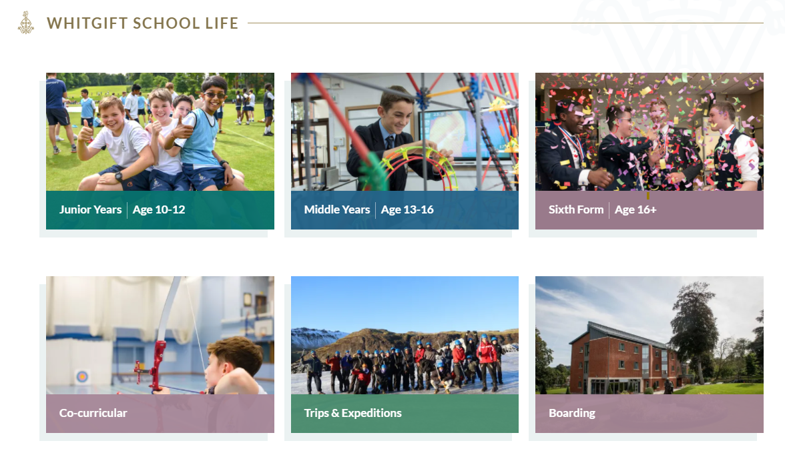

SCHOOL LIFE
THERE IS SOMETHING FOR EVERYONE AT WHITGIFT
Our extensive curriculum together with the broad range of co-curricular clubs and societies available makes every day an opportunity to learn and grow. The experiences students have at Whitgift, and the relationships that are formed, last a lifetime and and each student passing through the gates leaves their mark on the School.
Our students are happy, feel safe at School and appreciate that our differences make our community a special place: Our School is inclusive and diverse with students from all backgrounds, religions and communities.
Our School endeavors to meet not just the intellectual and academic needs of your son, but his personal, social and emotional needs too and this is embedded in our culture and expressed in the interactions that happen daily at Whitgift.
We foster transparency and openness and approach any issues that may come their way with that philosophy in mind. Happy students thrive and leave us with excellent exam results, friendships and the confidence to embrace whatever opportunities come their way. #
The School encourages good behaviour and rewards effort and hard work. They excel in feeding a lifelong passion for learning and great academic and sporting results are just a natural outcome. PARENT OF FIRST FORMER
COMMUNITY
From the very beginning, as the founding stone was laid, the John Whitgift Foundation has held a strong ethos of giving back to the local community. Whitgift School is proud to hold those values strongly at the heart of all we do within our local community. It is an ethos that filters through all aspects of our School community.
While our School remained closed, we supported the community in several ways, including supplying vans and drivers for the Croydon Volunteer Action Food Banks and creating visors as Personal Protective Equipment (PPE) for frontline NHS staff.
Our Director of Partnerships and Community was appointed at the beginning of 2020 to further enhance and take forward the School's vision to expand this area.
Whitgift aims to make a significant difference to the lives of those in Croydon and the wider area, through education, community action and encouraging the value of service for all our students. We hope that within the next few years many more members of the Whitgift community will be engaging with others locally in a mutually beneficial way.
ANDY MARLOW Director of Partnerships and Community
WHITGIFT NEWS